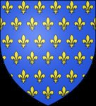

11433672803 Hertiginna Ermengarde Gerberga av Anjou
Hertiginna av Bretagne. Blev ca 58 år.

Far:
Mor:
Född:
omkring 966 Anjou, France. [1]
Död:
1024 France. [2]
Barn:
Noteringar
Bretagnes regent för sin omyndige sons räkning mellan 992-994
Personhistoria
966?
Födelse omkring 966 Anjou, France
[1]
Källor